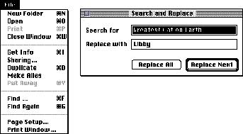
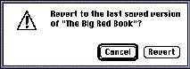

|
|
Labels for Interface ElementsMake labels for interface elements easy to understand in order to help users use your product. When you write labels for screen elements, try to speak in the user's language.In labels or names for menu items, checkboxes, radio buttons, and push buttons, use book title capitalization style. This style is referred to as caps/lowercase. In general, this means that you capitalize every word except articles (a, an, the), coordinating conjunctions (for example, and, or), and prepositions of three or fewer letters (except when a preposition is part of a verb phrase). The specific rules of this type of capitalization appears in detail in the Apple Publications Style Guide. Figure 11-1 shows some examples of elements that follow these capitalization rules. Figure 11-1 Proper capitalization of screen elements  Make sure that the title of the menu fits the items in the menu. For example, the Font menu can contain names of font families such as Helvetica, Geneva, and New York, but it should not include editing commands such as Cut and Copy. Use singular for menu titles unless a particular menu title doesn't make sense in the singular (such as Graphics). Apple recommends a number of standard menu titles such as File, Edit, and Font. The most important factor is that you be consistent in your use of menu titles. In other words, try not to create a menu bar that contains both plural and singular menu titles-for example, use Size and Style, not Sizes and Style. Try to be as specific as possible in your labels or names for radio buttons, push buttons, and checkboxes. It can be difficult to name a particular action or option in a word or two, but it's important to be concise and clear. In any case, don't sacrifice clarity for space. Figure 11-2 shows a good example of push button names that are short and accurate. Figure 11-2 Clear button names  For more information on names for push buttons, see "Button Names" on page 207 in Chapter 7, "Controls." |